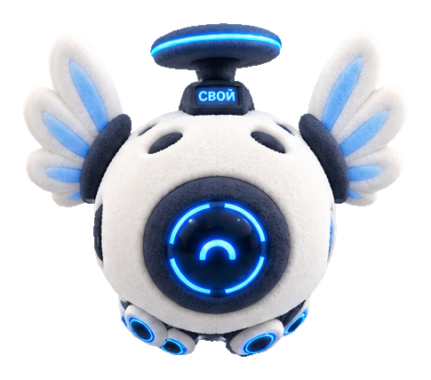

Укажите свои сайты
Где вы привыкли искать работу? Добавьте только их. Никакой самодеятельности в браузере.
Знакомьтесь — это Свой. Помогает найти новое место, подготовить отклик и пройти интервью. А потом остаётся помогать с настоящими рабочими задачами.
Windows 10/11 · x64 · бесплатная версия 1.0
Не нужен курс, сложная настройка или подключение чужих сервисов.
Где вы привыкли искать работу? Добавьте только их. Никакой самодеятельности в браузере.
Выберите резюме и прошлые отклики сами. Свой предложит профиль — вы проверите и исправите.
«Иванов Иван, вы? Ищем дизайнера, верно?» — простое подтверждение вместо длинной анкеты.
Из разговора — в вакансию. Из вакансии — в отклик. Из отклика — в подготовку к интервью. А после найма — в рабочие задачи.
Свой · ваше пространство
Можно по-человечески, без правильных формулировок.
Поиск по открытым данным HH.ru. Сравнение с вашей ролью и навыками. Для других сайтов — сохранение вакансии по ссылке.
Найти своёЧерновик под конкретную вакансию и ваш опыт. Вы редактируете, открываете сайт и отправляете сами.
Помощь с ответом работодателю и история статусов. Входящие сообщения остаются на вашем ПК.
Вопросы по требованиям вакансии и структура историй: контекст, ваша роль, действия, результат.
Задачи, письма, отчёты и планы. Локальный диалог помогает разобраться в новом месте, а не только его найти.
Взять с собойПо желанию — Qwen на вашем ПК или уже установленная Ollama. Основные сценарии доступны и без загрузки модели.
Добавьте в резюме живую страницу со счётчиками действий: проверенные вакансии, подготовленные отклики, дни использования.
Вы выбираете имя или псевдоним
Вы сами создаёте и обновляете страницу
Вы можете отключить её в любой момент
Вы выбираете, что показать
На ПКРезюме, переписка, черновики и задачи сохраняются в защищённом хранилище Windows.
По согласиюТолько выбранные вами документы. Мы не сканируем диск, пароли и историю браузера.
Минимум на сервереДля публичной ссылки — только имя/псевдоним, статус и счётчики. Не передаём тексты документов.
Подробная политика конфиденциальностиДа. Скачивание и все функции версии 1.0 — без оплаты, пробного периода, карты и скрытой подписки. Если условия когда-нибудь изменятся, текущую бесплатную версию мы не превратим внезапно в платную.
Нет. Он находит предложения и помогает подготовить персональный текст. Отправку и фактический статус подтверждаете вы. Мы не обходим CAPTCHA и правила сайтов.
Профиль, документы, черновики, задачи и подготовка к интервью доступны локально. Для поиска новых вакансий и публичного сертификата нужен интернет. Свободный диалог может работать через локальную модель без облака.
Отключение ссылки удаляет её публичное содержимое, но не стирает локальные документы и историю. Полное удаление истории — отдельное действие с явным текстовым подтверждением.
Установщик версии 1.0 пока не подписан сертификатом издателя. Скачивайте его только с этой страницы и при необходимости сверьте SHA-256 с опубликованной контрольной суммой.
И для поиска. И для работы. Бесплатно.
Скачать для Windows · 0 ₽Без регистрации и заявки. Данные не нужны для скачивания.